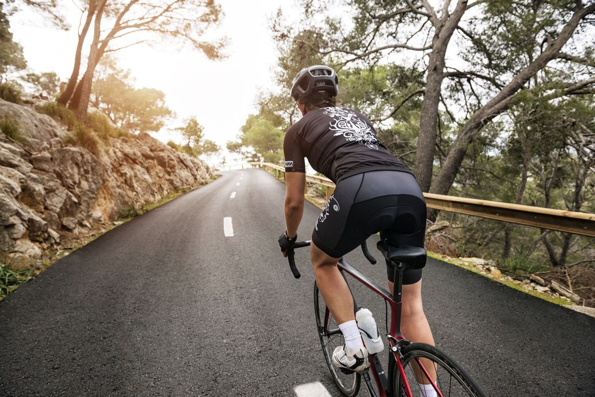
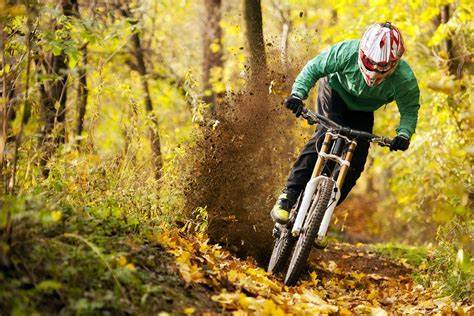
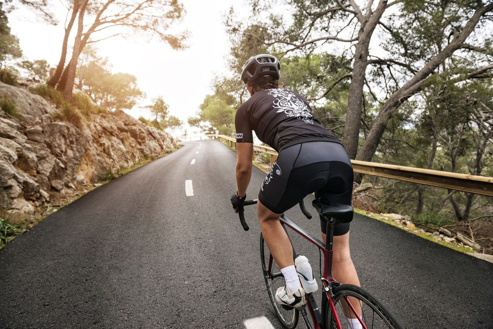
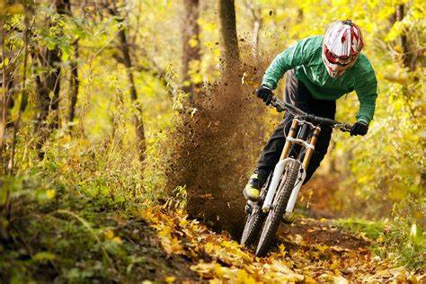

Les rutes més emblemàtiques del Camp de Tarragona
Descubre proyectos increíbles y conoce a nuestro equipo de expertos.
 




Explora nuestros proyectos
En esta web compartimos rutas en bicicleta por nuestro territorio...
¿Quieres participar?
Esta página está abierta a todos los ciclistas y amantes del territorio...